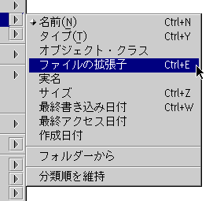

Important note: In order to avoid confusion, the sort extensions are disabled by default. You can enable them in the "&xwp; Setup" object.
The new &xwp; sort features are:
For one, new sort criteria such as "object class" and "file name extension" have been introduced.
Secondly, there is now a new "super-criterion" for always sorting folders first, in addition to the folder's default sort criterion. For example, you can sort by size and still have all folders sorted to the top.
For all this, the "Sort" submenu in each folder context menu has been reworked too:

As you can see, &xwp; adds menu items for "Always maintain sort order"
and "Sort folders first" for quick access.
In addition, you can quickly change the default sort criterion for a certain folder by holding down the "Shift" key while selecting a sort criterion in the "Sort" menu.